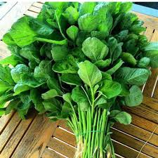
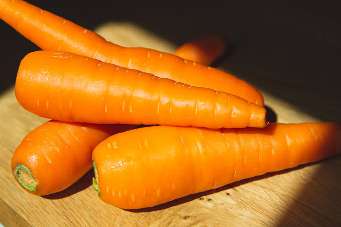
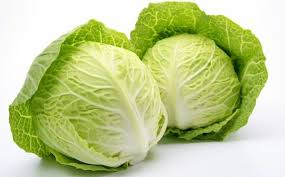

Menu Sayuran

Ikan Nila Segar
Ikan nila adalah salah satu sumber protein hewani yang terjangkau, mudah diolah, dan padat nutrisi. Rendah lemak dan kalori, sehingga membuat Anda merasa kenyang lebih lama tanpa asupan kalori berlebih
Pesan via WA
Bayam Hijau Segar
Bayam adalah sayuran superfood yang kaya akan nutrisi, vitamin, dan antioksidan. Manfaat utamanya meliputi pencegahan anemia, menjaga kesehatan jantung dan mata, mengontrol gula darah, serta mendukung sistem kekebalan tubuh
Pesan via WA
Wortel Manis
Wortel kaya akan beta-karoten (vitamin A), serat, dan antioksidan. Sayuran ini sangat baik untuk mempertajam penglihatan, menjaga kesehatan jantung, mengontrol kadar gula darah, melancarkan pencernaan.
Pesan via WA
Kol Putih Segar
Kol putih adalah sayuran rendah kalori kaya serat, vitamin C, dan vitamin K. Berbagai nutrisinya sangat baik untuk melancarkan pencernaan, mengontrol berat badan, menjaga kesehatan tulang, menurunkan kolesterol.
Pesan via WA
Bawang Merah
Bawang merah kaya akan antioksidan, senyawa sulfur, dan vitamin C. Mengonsumsinya secara rutin sangat baik untuk meningkatkan daya tahan tubuh, mengontrol kadar gula darah, menjaga kesehatan jantung.
Pesan via WA
Cabai Merah
Cabai merah kaya akan vitamin C, vitamin A, dan senyawa capsaicin yang memberikan rasa pedas. Kandungan ini memberikan banyak khasiat, mulai dari meningkatkan sistem kekebalan tubuh, meredakan nyeri, melancarkan sirkulasi darah.
Pesan via WA